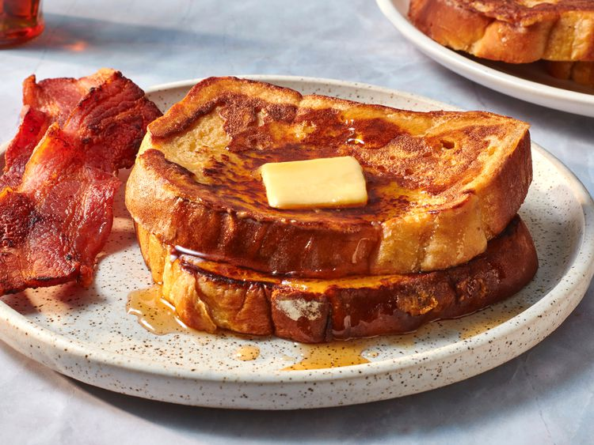

French Toast

Description
This fluffy French toast recipe is crisp on the outside,
but perfectly soft and tender on the inside.
Ingredients
- 1/4 cup all-purpose flour
- 1 cup milk
- 3 large eggs
- 1 tablespoon white sugar
- 1 teaspoon vanilla extract
- 1/2 teaspoon ground cinnamon
- 1 pinch salt
- 12 thick slices bread
Steps
- Gather all ingredients.
- Measure flour into a large mixing bowl.
Slowly whisk in milk.
Whisk in eggs, sugar, vanilla extract, cinnamon,
and salt until smooth.
- Heat a lightly oiled griddle or frying pan over medium heat.
Meanwhile, soak bread slices in milk mixture until saturated.
- Working in batches, cook bread on the preheated griddle
or pan until golden brown on each side.
- Serve hot and enjoy.
Home